APRÈS LE NIVEAU 30 // ATELIER D'ECHO
La forge de mémoire
Les six clés de résonance doivent être réassemblées dans l'ordre. Place chaque clé dans l'emplacement portant le même numéro pour activer le noyau.
ECHO://FORGE-07
SYSTÈME EN ATTENTE // SIX CLÉS REQUISES
ASSEMBLAGE // NOYAU DE MÉMOIRE
Les matrices d'accordage
1. Fais glisser chaque clé vers la matrice du même numéro.
2. Sur écran tactile ou au clavier, sélectionne une clé puis son emplacement.
3. Une mauvaise matrice refuse la clé; les six correspondances sont nécessaires.
NOYAU INACTIF

Sélectionne une clé ou fais-la glisser vers son emplacement.